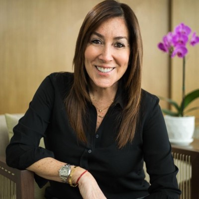
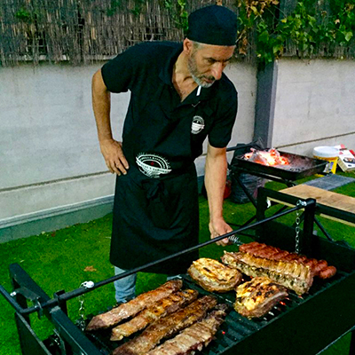

Nuestro Equipo

Gabriel Mendoza
Fundador & Chef Principal
Con 25 años de experiencia, Gabriel supervisa cada preparación personalmente.

María Mendoza
Gerente General
Hija de Gabriel, continúa con la tradición familiar y la excelencia en el servicio.

Carlos Rojas
Maestro Parrillero
Especialista en el punto exacto del pollo a la brasa con 15 años en Don Gabriel.